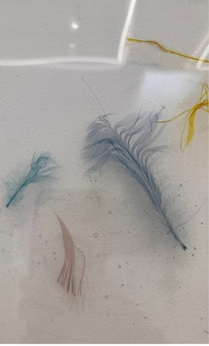
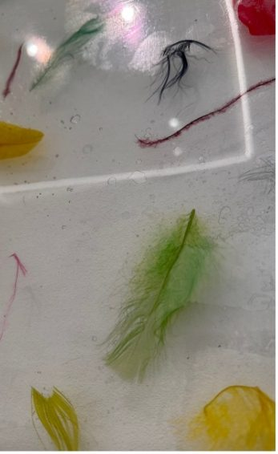
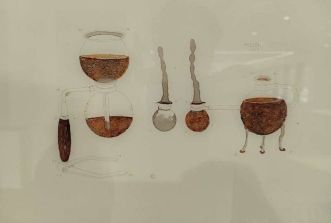
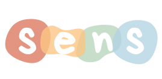

On ne fait pas que regarder.
On ressent, puis on regarde.
Oui. Et on commence par ce que vous connaissez déjà.
Le mur des sens
Chaque œuvre est reliée à un sens et à une couleur. Dans le cadre, la sensation à vivre ; en dessous, le cartel de l'œuvre. Suivez les couleurs : elles guident les enfants d'une étape à l'autre.
 « Écoute le vent dans les plumes »
« Écoute le vent dans les plumes »
 « Touche la résine du bout des doigts »
« Touche la résine du bout des doigts »
 « Sens la forêt en automne »
« Sens la forêt en automne »

« Goûte les confitures de grand-mère »…et la vue, elle,
vous suit partout.
Suivez les couleurs
Un audioguide gratuit vous raconte chaque œuvre comme une histoire, à hauteur d'enfant comme d'adulte. Au sol, quatre couleurs tracent le chemin, de l'entrée au niveau 1.
↳ comptez environ 45 minutes.
Télécom Saint-Étienne & Ceysson & Bénétière
Pour la clôture grand public de l'exposition Résonances, les étudiants de Télécom Saint-Étienne imaginent un parcours qui ouvre la galerie aux familles qui n'y entrent jamais. La galerie prête ses œuvres ; l'école conçoit l'expérience sensorielle et sonore. Le monde officiel de l'institution et le monde du dessin d'enfant, réunis le temps d'un week-end — comme dans notre logo.
 Galerie d'art · Saint-Étienne
Galerie d'art · Saint-Étienne
Exposition Résonances — un dernier week-end pour la découvrir, cette fois en écoutant, en touchant, en sentant et en goûtant.
Infos pratiques
Votre visite
Venez comme vous êtes
- Aucune connaissance en art demandée.
- Les enfants peuvent écouter, toucher, sentir, goûter.
- Poussettes bienvenues, visite à votre rythme.
- Un casque pour chacun, parent et enfant.

les 21 & 22 novembreVenez vivre un tableau, un sens.
Un week-end pour découvrir l'art en famille, autrement. On vous attend à la galerie Ceysson & Bénétière.
Voir l'itinéraire